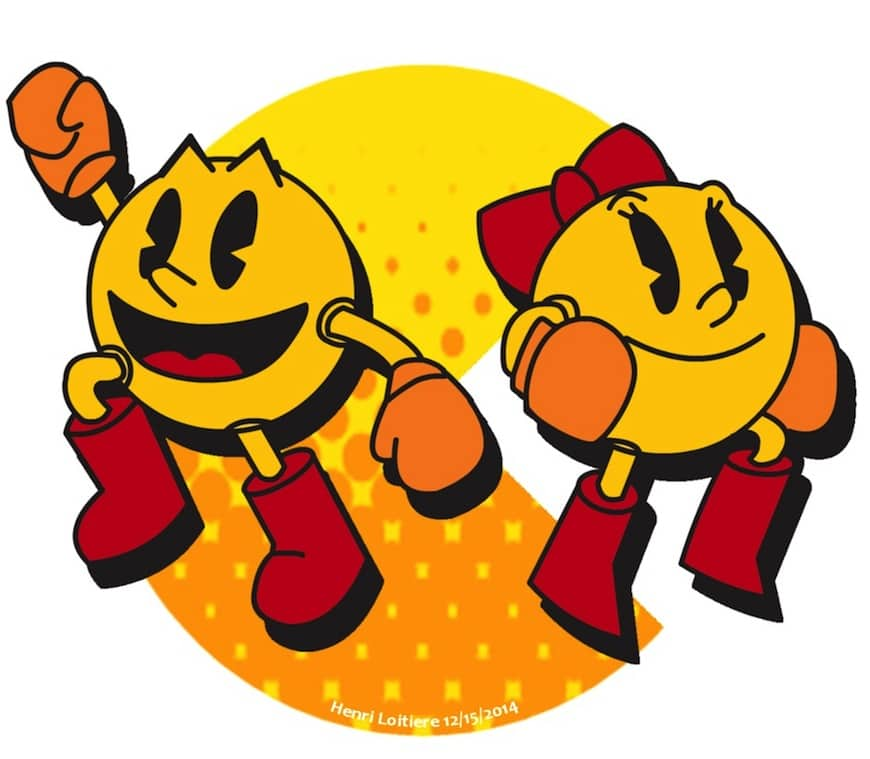
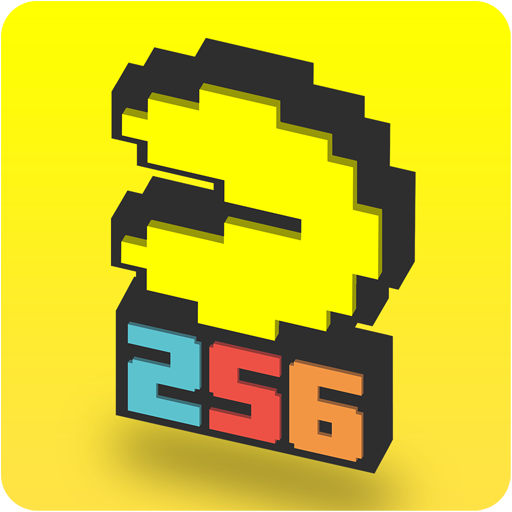
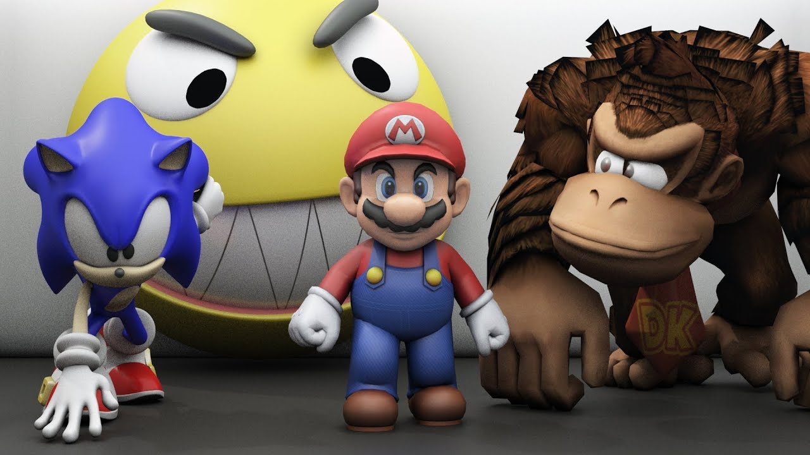

En un principio, Pac-Man fue pensado como un juego para chicas. De hecho, una de las estrategias para atraer a las mujeres fue la elección de nombres para los fantasmas Blinky, Pinky, Inky y Clyde, que les dotaba de una personalidad tierna.

Los 8 bits de capacidad que permitía la tecnología en 1980 imposibilitaron que Pac-Man fuera un juego interminable. El arcade cuenta con 256 niveles, luego de superado ocurre un error: la mitad de la pantalla se hace ilegible, lo que impide que la persona continúe el juego.

En una encuesta realizada en Estados Unidos se encontró que el 94% de personas adultas reconocían al glotón amarillo. Esta cifra supera por un punto al reconocimiento que tiene Mario Bros.

Para el aniversario 30 del videojuego, Google le dedicó un banner interactivo, que permitía a los usuarios jugar el arcade. Estuvo disponible por 48 horas, durante las que se estima que los visitantes jugaron alrededor de 500 millones de horas, una verdadera pérdida de productividad para las empresas.